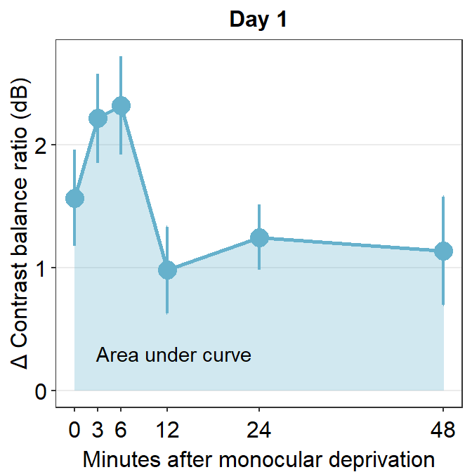
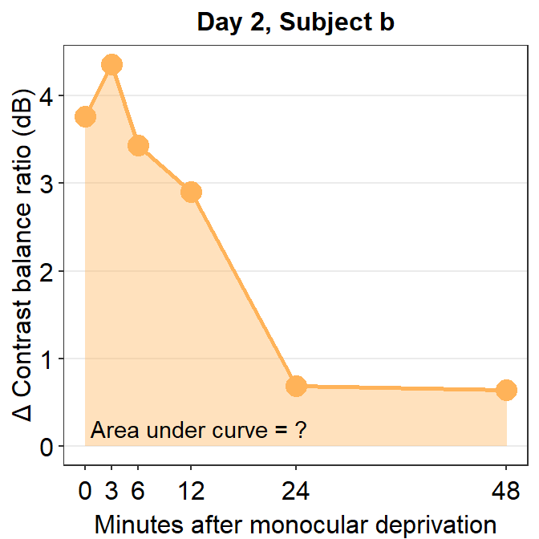
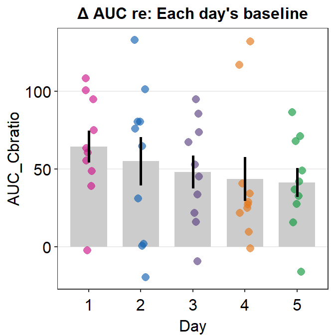
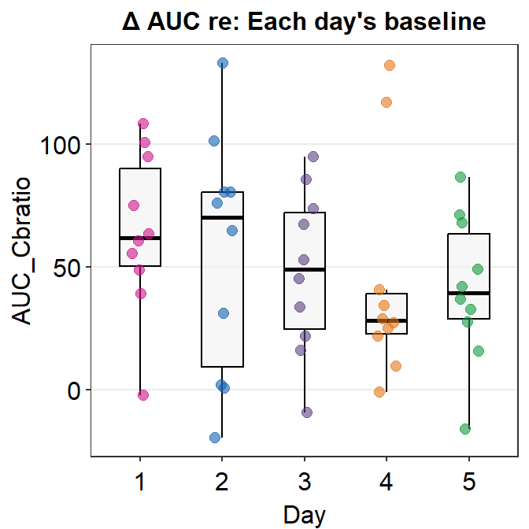

Chapter 8 Calculating Area under a Curve
Citing the Guide and the Package
If you have used smplot2 for your analysis routines, please cite one of the papers below:
Min, S. H. (2024). Visualization of composite plots in R using a programmatic approach and smplot2. Advances in Methods and Practices in Psychological Science, 7(3). [pdf] [codes]
Min, S. H., & Zhou, J. (2021). smplot: an R package for easy and elegant data visualization. Frontiers in Genetics, 12, 802894. [pdf] [codes]
Getting Started
In this chapter, we will use the data from this paper (PDF):
Min, S. H., Baldwin, A. S., & Hess, R. F. (2019). Ocular dominance plasticity: a binocular combination task finds no cumulative effect with repeated patching. Vision Research, 161, 36-42.
Let’s begin by loading the tidyverse and other libraries, and uploading the csv file min2019b.csv using read_csv() from the tidyverse package.
head() returns the first 6 rows of the data frame. tail() returns the last 6 rows of the data frame.
library(tidyverse)
library(smplot2)
library(cowplot)
df <- read_csv("https://www.smin95.com/min2019b.csv")
head(df)## # A tibble: 6 × 4
## Subject Day Time Cbratio
## <chr> <dbl> <dbl> <dbl>
## 1 a 1 0 -0.421
## 2 b 1 0 2.82
## 3 c 1 0 1.69
## 4 d 1 0 2.55
## 5 e 1 0 -0.217
## 6 f 1 0 0.626unique() returns unique values in the data set. Let’s see how many unique values there are in the Day column of the data set. A column can be extracted by using $.
## [1] 1 2 3 4 5
## Levels: 1 2 3 4 5Notice that there are now five different days in the data set.
As previously mentioned, there are four columns in this data frame:
First,
Subjectrefers to each participant. There are 10 participants total.Next,
Dayrefers to the day of testing. The participants were tested on Days 1, 2, 3, 4 and 5, ad we will using all data.Timerefers to the number of minutes after an experimental manipulation (ex. monocular deprivation). These are 0, 3, 6, 12, 24 and 48 minutes, but in the data frame, it says 0, 1, 2, 3, 4 and 5; we will change the labels manually.The
Cbratiocolumn refers to the actual data that will be used for data analysis.
8.1 Pipe %>%
Let’s plot data from Day 1 only.
To do so, we will need to first filter for data from Day 1 using filter(), compute the average and standard error across subjects using summarise() and sm_stdErr(), and save the changed
format of the dataframe into a new variable using <- or ->.
df_day1 <- filter(df, Day == 1)
by_time_day1 <- group_by(df_day1, Time)
avg_day1 <- summarise(by_time_day1,
Average = mean(Cbratio),
StdError = sm_stdErr(Cbratio)
)The steps above (filter(), group_by() and summarise()) are coded separately. Each line has one of these steps. However, these can be combined in one line by using pipe %>% as shown below.
avg_day1 <- df %>%
filter(Day == 1) %>%
group_by(Time) %>%
summarise(
Average = mean(Cbratio),
StdError = sm_stdErr(Cbratio)
)Now the steps (filter(), group_by() and summarise()) are written from left-to-right in a continuous fashion, rather than a separate step.
Pipe %>% is part of the tidyverse package, and it is deemed a necessary tool for data analysis using R. It is extremely useful because it allows you to write codes that are easier to understand. Notice that if you use %>%, the input does not have to written because the input is actually the code that is written just before. For example:
## # A tibble: 60 × 4
## Subject Day Time Cbratio
## <chr> <fct> <dbl> <dbl>
## 1 a 1 0 -0.421
## 2 b 1 0 2.82
## 3 c 1 0 1.69
## 4 d 1 0 2.55
## 5 e 1 0 -0.217
## 6 f 1 0 0.626
## 7 g 1 0 2.62
## 8 h 1 0 1.42
## 9 u 1 0 1.54
## 10 j 1 0 3.05
## # ℹ 50 more rows## # A tibble: 60 × 4
## Subject Day Time Cbratio
## <chr> <fct> <dbl> <dbl>
## 1 a 1 0 -0.421
## 2 b 1 0 2.82
## 3 c 1 0 1.69
## 4 d 1 0 2.55
## 5 e 1 0 -0.217
## 6 f 1 0 0.626
## 7 g 1 0 2.62
## 8 h 1 0 1.42
## 9 u 1 0 1.54
## 10 j 1 0 3.05
## # ℹ 50 more rowsThese two are identical. But notice that if you do not use pipe,
you might have to save the intermediate variables (such as df_day1 and by_time_day1) multiple times, which can be tedious. Notice that when pipe %>% is used, the need to save these variables disappears.
I will use %>% from now on due to my personal preference.
8.2 Area under a curve
Let’s use the data set avg_day1 to plot data only from Day 1.
avg_day1 %>% ggplot(aes(x = Time, y = Average)) +
geom_area(fill = sm_color("skyblue"), alpha = 0.3) +
geom_point(size = 4.5, color = sm_color("skyblue")) +
geom_line(size = 1, color = sm_color("skyblue")) +
geom_errorbar(aes(ymin = Average - StdError, ymax = Average + StdError), size = .75, width = .05, color = sm_color("skyblue")) +
scale_x_continuous(
breaks = unique(df$Time),
labels = c("0", "3", "6", "12", "24", "48")
) +
sm_hgrid(legends = FALSE) +
ggtitle("Day 1") +
xlab("Minutes after monocular deprivation") +
ylab("\u0394 Contrast balance ratio (dB)") +
annotate("text", x = 13, y = 0.3, label = "Area under curve")
One way to show data is to calculate the area under a curve (as shown by the colored area) in the figure above. Area under a curve is useful because it reduces a number of data points (6 in this case due to 6 time points) into one. In our context, a large area under a curve represents a large change in contrast balance ratio over time. In short, it captures both the magnitude and longevity of the effect.
Let’s calculate area under a curve for each subject and day across 0 to 48 minutes in the x-axis (minutes after monocular deprivation) using sm_auc().
On the x-axis of the graph, there are six time points. You will need to store these values in a new variable, which I will call x here because it represents the x-axis. Instead of manually writing them down, you could extract the unique number of Time from the data frame.
Now let’s filter for one subject’s data (subject b) on Day 1 using filter() and pipe %>%.
## # A tibble: 6 × 4
## Subject Day Time Cbratio
## <chr> <fct> <dbl> <dbl>
## 1 b 1 0 2.82
## 2 b 1 3 0.881
## 3 b 1 6 1.83
## 4 b 1 12 0.877
## 5 b 1 24 0.693
## 6 b 1 48 2.09subj_b_day1 %>% ggplot(aes(x = Time, y = Cbratio)) +
geom_area(fill = sm_color("skyblue"), alpha = 0.3) +
geom_point(size = 4.5, color = sm_color("skyblue")) +
geom_line(size = 1, color = sm_color("skyblue")) +
scale_x_continuous(
breaks = unique(df$Time),
labels = c("0", "3", "6", "12", "24", "48")
) +
sm_hgrid(legends = FALSE) +
ggtitle("Day 1, Subject b") +
xlab("Minutes after monocular deprivation") +
ylab("\u0394 Contrast balance ratio (dB)") +
annotate("text", x = 13, y = 0.2, label = "Area under curve = ?")
The variable subj_b_day1 now stores the data of subject b on Day 1. Now let’s calculate the area under a curve (AUC) from subj_b_day1 using sm_auc().
sm_auc() calculates the AUC using the method of trapezoid integration; this is equivalent to trapz function in Matlab and numpy.trapz in Python. It has two arguments:
- The first argument is the x point. In this case, it is the minutes after monocular deprivation (0, 3, 6, 12, 24 and 48). If this argument is left empty, it will use 0, 1, 2, 3 etc as default. For more information, please type ?sm_auc in the command console.
- The second argument is the data, which is shown by the y-axis in the blue graph. In this case, it is the change of contrast balance ratio (dB). These values can be extracted from subj_b_day1 using $.
## [1] 60.5286The AUC equals 60.53. This shows that for subject b, the effect is large and long-lasting.
subj_b_day1 %>% ggplot(aes(x = Time, y = Cbratio)) +
geom_area(fill = sm_color("skyblue"), alpha = 0.3) +
geom_point(size = 4.5, color = sm_color("skyblue")) +
geom_line(size = 1, color = sm_color("skyblue")) +
scale_x_continuous(
breaks = unique(df$Time),
labels = c("0", "3", "6", "12", "24", "48")
) +
sm_hgrid(legends = FALSE) +
ggtitle("Day 1, Subject b") +
xlab("Minutes after monocular deprivation") +
ylab("\u0394 Contrast balance ratio (dB)") +
annotate("text", x = 14.5, y = 0.2, label = "Area under curve = 60.5")
Now let’s visualize the data of subject b from Day 2.
subj_b_day2 <- df %>% filter(Day == 2 & Subject == "b")
subj_b_day2 %>% ggplot(aes(x = Time, y = Cbratio)) +
geom_area(fill = sm_color("yelloworange"), alpha = 0.3) +
geom_point(size = 4.5, color = sm_color("yelloworange")) +
geom_line(size = 1, color = sm_color("yelloworange")) +
scale_x_continuous(
breaks = unique(df$Time),
labels = c("0", "3", "6", "12", "24", "48")
) +
sm_hgrid(legends = FALSE) +
ggtitle("Day 2, Subject b") +
xlab("Minutes after monocular deprivation") +
ylab("\u0394 Contrast balance ratio (dB)") +
annotate("text", x = 13, y = 0.2, label = "Area under curve = ?")
Now, let’s calculate the AUC for subject b from Day 2.
## [1] 80.38215The AUC equals 80.38. In the case of subject b, the effect seems to have increased on Day 2 relative to Day 1.
subj_b_day2 <- df %>% filter(Day == 2 & Subject == "b")
subj_b_day2 %>% ggplot(aes(x = Time, y = Cbratio)) +
geom_area(fill = sm_color("yelloworange"), alpha = 0.3) +
geom_point(size = 4.5, color = sm_color("yelloworange")) +
geom_line(size = 1, color = sm_color("yelloworange")) +
scale_x_continuous(
breaks = unique(df$Time),
labels = c("0", "3", "6", "12", "24", "48")
) +
sm_hgrid(legends = FALSE) +
ggtitle("Day 2, Subject b") +
xlab("Minutes after monocular deprivation") +
ylab("\u0394 Contrast balance ratio (dB)") +
annotate("text", x = 14.5, y = 0.2, label = "Area under curve = 80.4")
So far,we have 9 more subjects across five days and subject b from three other days. This will require us to compute 48 more AUCs total. This process is rater repetitive. Should we manually compute AUC for each one? Luckily, the answer is no. Let’s use sm_auc_all().
## AUC = Cbratio * Time## # A tibble: 50 × 3
## Subject Day AUC_Cbratio
## <chr> <fct> <dbl>
## 1 a 1 -2.37
## 2 a 2 0.683
## 3 a 3 -9.55
## 4 a 4 27.1
## 5 a 5 42.0
## 6 b 1 60.5
## 7 b 2 80.4
## 8 b 3 94.7
## 9 b 4 34.1
## 10 b 5 86.5
## # ℹ 40 more rowssm_auc_all() creates a new data frame with AUC for each subject and condition (in this case, Day). It has six arguments:
data= this argument requires the variable that stores the data frame. In our case, it isdf.subjects= this argument requires the name of the column of the data frame that contains subjects. It must strings, ex.'Subject', notSubject.groups= this argument requires the name of the column of the data frame that contains each group. In this example, there is no group. An example would beGroupcolumn that contains two groups:NormalandAmblyopia(see next chapter on Slope Analysis).conditions= this argument requires name of the column of the data frame that contains each condition. In our example, the condition is the day. It must strings, ex.'Day', notDay.x= this argument requires the name of the column of the data frame that contains the x-axis points from which the AUC can be calculated. In our case, these are 0, 3, 6, 12, 24 minutes. It must be strings, ex.'Time', notTime. Also, it must be numeric/double, NOT factor. Make sure you check that the column is numeric. If its not, convert the column of the dataframe into double beforehand. ex.df$Time <- as.numeric(df$Time)ordf$SpatialFreq <- as.numeric(df$Time).values= this argument requires the name of the column of the data frame that contains the actual data, which are the y-axis points from which the AUC can be calculated. In our case, it is the change in contrast balance ratio. It must strings, ex.'Cbratio', notCbratio.
Before using sm_auc_all(), you will need to check for a few things. First, check if the x column is numeric, not factor, by using is.numeric() function. If it is numeric, proceed with using sm_auc_all(). Second, see if the x levels (ex. 0, 3, 6, 12, 24 and 48 etc) are identical for each subject and condition (ex. no 7, 16, 29 minutes for subject 10).
Note: If you have a column for condition (as an example) but you only have one identifier for condition (and hence one condition total), you will still need to include it as sm_auc_all(..., conditions='condition'). If you do not want to include the condition column in sm_auc_all(), then you should remove the column from the data frame altogether. This also applies to sm_slope_all().
## [1] TRUE## [1] FALSEAfter checking, we can store the results from sm_auc_all() into a new variable. I will call the new variable auc_df.
auc_df <- sm_auc_all(
subjects = "Subject", conditions = "Day",
x = "Time", values = "Cbratio",
data = df
)## AUC = Cbratio * TimeNow we can plot the AUCs using sm_bar(), sm_boxplot etc. Let’s have a try.
Here is a bar graph showing auc_df’s data. This figure is similar to Figure 3E in the original paper (Min, Baldwin and Hess, 2019).
- re: means relative to X. The data are the differences compared to the baseline (re: Baseline).
auc_df %>% ggplot(aes(x = Day, y = AUC_Cbratio, color = Day)) +
sm_bar() +
scale_color_manual(values = sm_palette(5)) +
ggtitle("\u0394 AUC re: Each day's baseline")
Here is a box plot showing auc_df’s data.
auc_df %>% ggplot(mapping = aes(x = Day, y = AUC_Cbratio, color = Day)) +
sm_boxplot(
alpha = 0.6,
point.params = list(size = 2.2)
) +
scale_color_manual(values = sm_palette(5)) +
ggtitle("\u0394 AUC re: Each day's baseline")
8.3 Reproducing figures in the paper (Min et al., 2019)
Let’s redraw some of the figures in the paper. In 2019, when the paper was published, there was no smplot2. However, the themes I developed during then have become part of smplot2. So, I have incorporated functions from smplot2 to reproduce the figures here.
8.3.1 Figure 3B (a best-fit line with points and error bars)
df <- read_csv("https://www.smin95.com/min2019b.csv")
# filter data from Days 2-4. | means OR.
df1 <- df %>%
filter(Day == 2 | Day == 3 | Day == 4) %>%
group_by(Day, Time) %>%
summarise(avg = mean(Cbratio), se = sm_stdErr(Cbratio))
# mean and standard error computed for each day and time, both of which have been grouped.
df1$Time <- as.numeric(df1$Time)
df1$Day <- as.factor(df1$Day) # Day has to be factored here because they will be labelled as different colors. Factor means categorical variables.
colors <- c("#55A868", "#C44E52", "#8172B2")
df1 %>% ggplot(aes(x = Time, y = avg, color = Day)) +
geom_point(size = 4.5) +
geom_errorbar(aes(ymin = avg - se, ymax = avg + se), size = .5, width = 1) +
geom_smooth(method = "lm", se = F, size = 0.9) +
# lm = linear regression method
scale_x_continuous(
breaks = unique(df$Time),
labels = c("0", "3", "6", "12", "24", "48")
) +
sm_hgrid(legends = TRUE) +
scale_color_manual(
values = colors,
labels = c("Day 2", "Day 3", "Day 4")
) +
ggtitle("Recovery of the patching effect") +
xlab("Time after monocular deprivation (min)") +
ylab("\u0394 Contrast balance ratio (dB)") +
theme(
legend.justification = c(1, 0),
legend.position = c(0.96, 0.67),
legend.title = element_blank()
)
8.3.2 Figure 3D (a bar graph)
This a bar graph that has been plotted with sm_bar(). The y-axis has been set with the function coord_cartesian().
baseline <- read_csv("https://www.smin95.com/baseline.csv")
colors <- c(
"#4C72B0", "#55A868", "#C44E52",
"#8172B2", "#D55E00"
)
baseline$Day <- as.factor(baseline$Day)
baseline %>% ggplot(aes(x = Day, y = Baseline, fill = Day)) +
sm_bar(
points = FALSE,
forget = TRUE,
err.params = list(size = 0.4),
bar.params = list()
) + # remove defaults of bar.params
scale_fill_manual(values = colors) +
ggtitle("Baseline across days") +
coord_cartesian(ylim = c(-2, 2)) +
ylab("Contrast balance ratio (dB)") +
xlab("Patching day")
8.3.3 Figure 3E (modeling in Matlab and plotting in R)
The grey shades have actually been approximated using Matlab. The results have been saved in the .csv file fit_error_shade.csv. They are then imported into R, where the final figure is plotted.
Notice that two data frames are used to create this plot, df_shade1 and auc_df1. The former contains the values from the modeling in Matlab, the latter contains AUC values.
So do not worry if your field does not use R for data analysis. One can still perform data visualization using R.
df_shade <- read_csv("https://www.smin95.com/fit_error_shade.csv")
df_shade1 <- df_shade %>% mutate(yUpp = y_mean + y_se, yLow = y_mean - y_se)
df <- read_csv("https://www.smin95.com/min2019b.csv")
auc_df <- sm_auc_all(
subjects = "Subject", conditions = "Day",
x = "Time", values = "Cbratio",
data = df
)
auc_df1 <- auc_df %>%
group_by(Day) %>%
summarise(y_mean = mean(AUC_Cbratio), std_err = sm_stdErr(AUC_Cbratio))
auc_df1$Day <- as.numeric(auc_df1$Day)
colors <- c(
"#4C72B0", "#55A868", "#C44E52",
"#8172B2", "#D55E00"
)
df_shade1 %>% ggplot(aes(x = x, y = y_mean)) +
geom_ribbon(aes(ymin = yLow, ymax = yUpp), alpha = .08) +
geom_linerange(data = auc_df1, aes(Day, ymin = y_mean - std_err, ymax = y_mean + std_err), size = .5) +
geom_point(data = auc_df1, aes(Day, y_mean, color = as.factor(Day), size = 5)) +
sm_hgrid(legends = FALSE) +
scale_x_continuous(limits = c(1, 5)) +
scale_y_continuous(limits = c(0, 90)) +
scale_color_manual(values = colors) +
ylab("Area Under Curve (dB min)") +
xlab("Patching Day") +
ggtitle("\u0394 AUC re: Each Day's Baseline") +
annotate("text", label = "y = -5.8(Day) + 67.8", x = 2.0, y = 5) +
annotate("text", label = "***", x = 1, y = 82, size = 3.5, fontface = "bold") +
annotate("text", label = "**", x = 2, y = 75, size = 3.5, fontface = "bold") +
annotate("text", label = "**", x = 3, y = 68, size = 3.5, fontface = "bold") +
annotate("text", label = "*", x = 4, y = 65, size = 3.5, fontface = "bold") +
annotate("text", label = "**", x = 5, y = 60, size = 3.5, fontface = "bold")